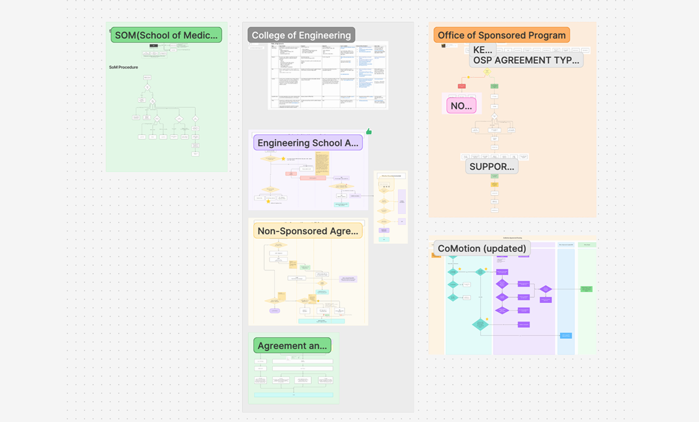
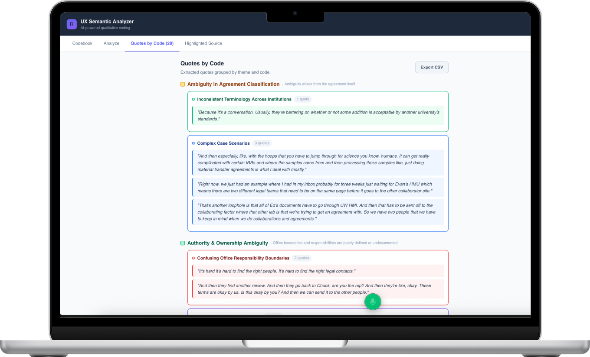
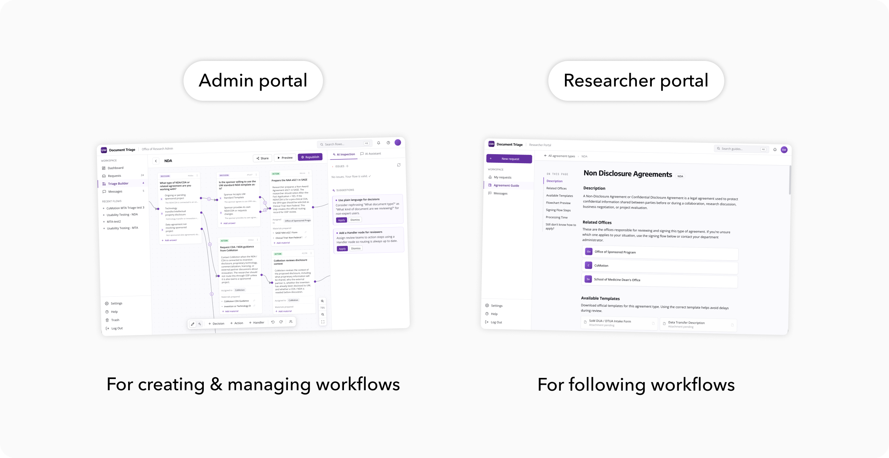

UW Agreement Triage Platform
UW CoMotion routes hundreds of MTAs, NDAs, and Data Use Agreements each year — yet these workflows only exist in the heads of 50+ staff members and scattered email threads, with no clear, standardized procedures.
We built the infrastructure to turn routing logic from institutional memory into an institutional asset: a node canvas for admins to author workflows, and a guided wizard for researchers to follow them.
Take 30s to learn what we do
Agreement routing at UW runs on institutional memory — invisible, fragile, and gone when people leave.
"The messy part is when an agreement is not getting to the right unit. Nobody can figure out where it should belong."
— CoMotion Staff, Stakeholder InterviewResearcher
Bounced between several offices. No explanation why. Four months in and still didn't know who was supposed to sign it.
Administrator
Half the day redirecting misdirected requests. No contact map, no shared routing guide.
3 months · 4 offices · 20+ interviews · 20+ email cases
Desk Research
Researched routing flows of 4 major offices, looked deep into current procedures.
Stakeholder Interviews
4 Director/VP-level interviews. Surfaced institutional constraints and political boundaries.
User Interviews
10 PIs and PI assistants. Focused on the first moment of confusion — when and why they got lost.
Email Case Analysis
11 real routing threads. Triangulated interview findings with evidence of confusion in the wild.
Snowball Sampling
Recruited via CoMotion Associates. Criteria: recent submission, routing confusion.
Thematic Analysis
Built a custom Claude Artifact for annotation — 3–4× faster than manual.

Hand-drawn flowcharts from research

We vibe coded an analysis tool
Three structural root causes
Unclear Triage Criteria
The subtle distinctions live only in a few experienced staff members' heads — no way to transfer it.
No Transparency
Routing decisions leave no trace. Predecessors' choices can't be explained, audited, or handed off.
Fragmented Knowledge
The same rules exist on a website, in a PDF, and in someone's head — none of them match.
Three design directions
Externalize Triage Logic
Move routing criteria out of people's heads and into a structured, editable format — so any admin can apply the same rules, not just experienced ones.
Make Decisions Traceable
Every routing outcome should be explainable — logged, auditable, and handoff-ready so predecessors' decisions don't disappear with them.
Create a Single Source of Truth
Consolidate routing rules from websites, PDFs, and informal knowledge into one maintainable record — so all versions stay in sync.
A dedicated admin portal to unify internal workflows.
Admin work (authoring branching logic) and researcher work (following guided steps) require fundamentally different interfaces. Combining them would overwhelm one group or constrain the other.
Separate rule-writing from rule-following entirely. Admin Portal authors the logic; Researcher Portal consumes it through a one-way publish layer.

A node-based canvas for best editing a workflow
Routing logic is branching and conditional — it can't be reliably inferred at runtime. Non-technical admins need to author and maintain it themselves, with full auditability.
A visual canvas with 4 structured node types — auditable, editable, version-controlled. Routing logic becomes an institutional asset, not a cheat sheet.
Higher admin learning curve — offset by AI-assisted modifications.

File2Flow - An AI core that draft the flow easily
Routing knowledge already exists, scattered across websites, PDFs, and people's heads. Starting from scratch is too much friction to get anyone to adopt the tool.
AI reads a URL or PDF → generates a structured first-draft canvas. Admins edit, not author from zero. Cuts initial setup from hours to minutes.

Guided wizard, not a search bar
Researchers don't know the system's vocabulary — you can't search for what you don't know. A FAQ page makes them read and self-classify, when they just need an answer.
A node-by-node wizard derived from the published admin canvas. The system classifies for the user — no routing expertise required.

Two portals. One connected system.
Admin Portal — Build the routing logic
Turn institutional knowledge from a private cheat sheet into a shared, editable, version-controlled asset.
File2Flow pipeline
Document Input
AI Restatement
Node Identification
Relationship Completion
Graph Output
Four node types
Definition Node
Sets the agreement type's scope. Entry point for the entire decision tree.
Decision Node
Judgment question + multi-condition branches. The core routing logic unit — inline-editable.
Action Node
Specific next steps for each routing outcome: forms to submit, offices to contact, materials needed.
Handler Node
Names the responsible office or contact. Admin controls whether researchers can see this.
Researcher Portal — Follow the routing logic
Consumes whatever admins publish — always reflects the latest routing logic, no manual sync.
Agreement Knowledge Library
Searchable reference for every agreement type: definition, responsible office, typical timeline, FAQs. The self-serve guide that used to live in a senior staff member's inbox.
Guided Intake Wizard
Step-by-step questions drawn from the published canvas. Tells users not just where to go, but why. "Unsure" options prevent dead ends for edge cases.
Core value validated. The real barrier is onboarding — not the concept.
Admin — n=2
Researcher — n=4
Key Findings
What we shipped, what we learned.
Scoping is the first design decision
Every stakeholder had a different vision for this product. Structured stakeholder interviews before any building — aligning on scope early — was the highest-leverage activity of the project.
PRs are the new design handoff
Vibe coding with Claude Code and Cursor collapsed the design-to-dev gap. We shipped polished UIs faster through PRs than Figma iterations — and expanded what designers can own.
AI compounds research capacity
A custom Claude Artifact for thematic coding: 2 hours instead of 2 days. This isn't replacing judgment — it clears the path for it.